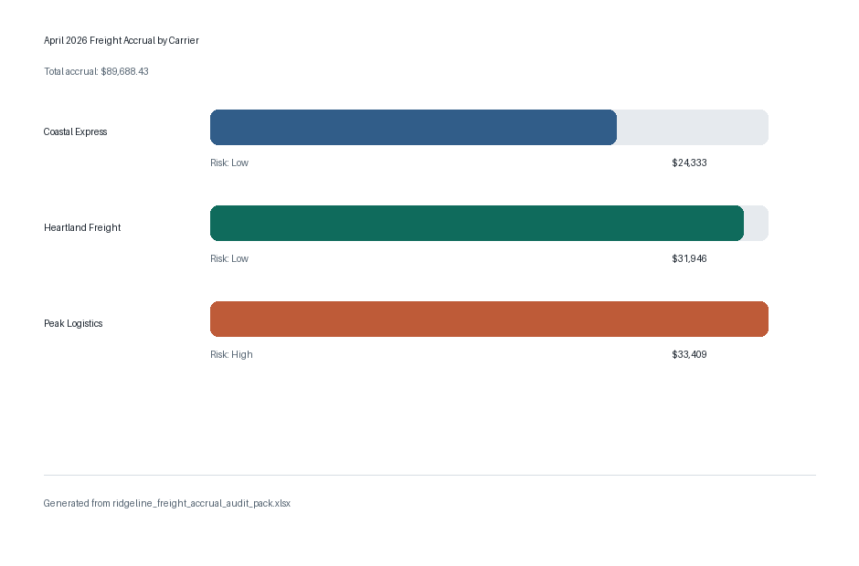

What It Does
The engine normalizes messy carrier names, parses non-standard rate cards, applies carrier-specific pricing, estimates accessorials when needed, and writes a CFO-readable Excel audit pack.
Numeric Finance Engineer Cup · Round 1
April 2026 close estimate
A runnable Python accrual engine that estimates freight expense from April shipment activity, carrier rate cards, historical invoice detail, and Denise's trailing-average baseline. Upload a fresh source package to regenerate the audit pack and journal entry from scratch.

Run fresh files
The serverless runner writes uploaded files to a temporary directory, executes the Python accrual engine, and returns a ZIP with a new audit workbook, journal CSV, exception log, and run summary.
The engine normalizes messy carrier names, parses non-standard rate cards, applies carrier-specific pricing, estimates accessorials when needed, and writes a CFO-readable Excel audit pack.
Direct rate-card calculations are separated from historical estimates and broader assumptions. April actual invoices were not provided, so April is labeled as an estimate rather than compared to unavailable actuals.
The output includes required-field checks, stale rate-card warnings, mapping exceptions, missing-weight estimates, outlier review, materiality thresholds, and shipment-to-journal tie-outs.
Peak Logistics has missing mileage mappings in the provided rate card. Those shipments use historical fallback estimates and remain visible in the exception log for close review.